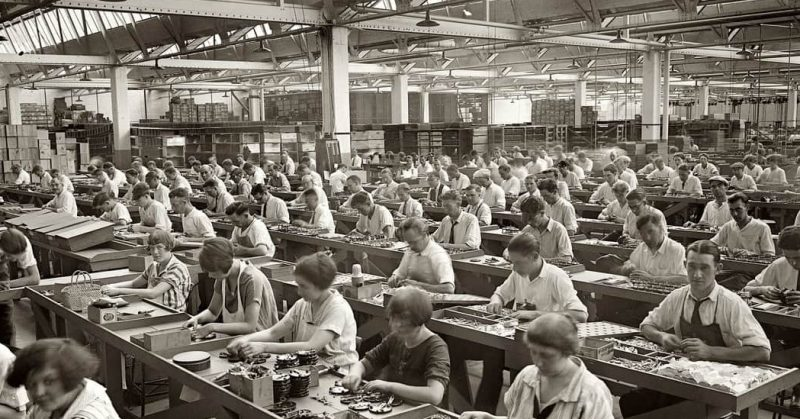

- Toma de la Bastilla (14 de julio de 1789 )
- Declaracion delos derechos del hombre y del ciudadanop (1789)
- Declaracion delos derechos del hombre y del ciudadanop (1789)
Introduccion
La Revolución Industrial no fue solo sobre máquinas de vapor y fábricas; estuvo impulsada por avances en las matemáticas. Descubre cómo estos avances dieron forma al mundo en el que vivimos.
Causas de la revolucion
Conecuencias
La RevolucionFrancesa tuvo unprofundo impacto en Francia y enel mundo, llevando a la abolicion de lamonarquia absoluta, la proclamacion de la republica y la disusion de las ideas de lasideas revolucionarias por toda Europa.